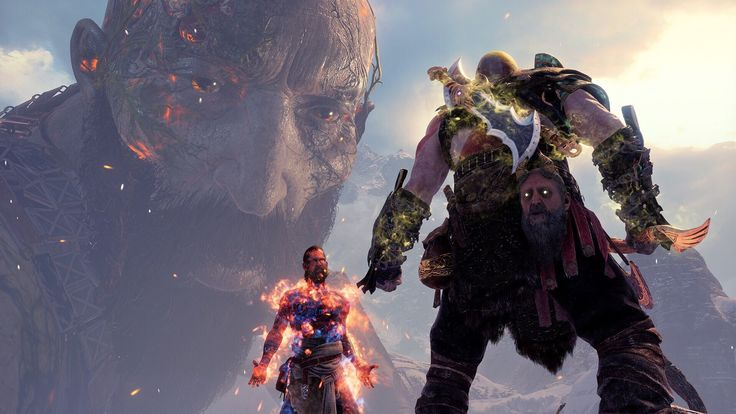

God of War est un jeu vidéo d'action-aventure développé par Santa Monica Studio et publié par Sony Interactive Entertainment. Sorti le 20 avril 2018 sur PlayStation 4, puis sur PC en 2022, il marque un renouveau total de la saga.

God of War est un jeu vidéo d'action-aventure développé par Santa Monica Studio et publié par Sony Interactive Entertainment. Sorti le 20 avril 2018 sur PlayStation 4, puis sur PC en 2022, il marque un renouveau total de la saga.
On suit Kratos, ancien dieu de la guerre grec, après la destruction de l’Olympe. Réfugié dans le royaume nordique, il tente de mener une vie paisible avec Faye, avec qui il a eu un fils : Atreus.

L’une des grandes forces de God of War est son plan-séquence constant, renforçant l’immersion. Son univers, sa musique, sa direction artistique et surtout la relation père-fils entre Kratos et Atreus en font une œuvre marquante.
